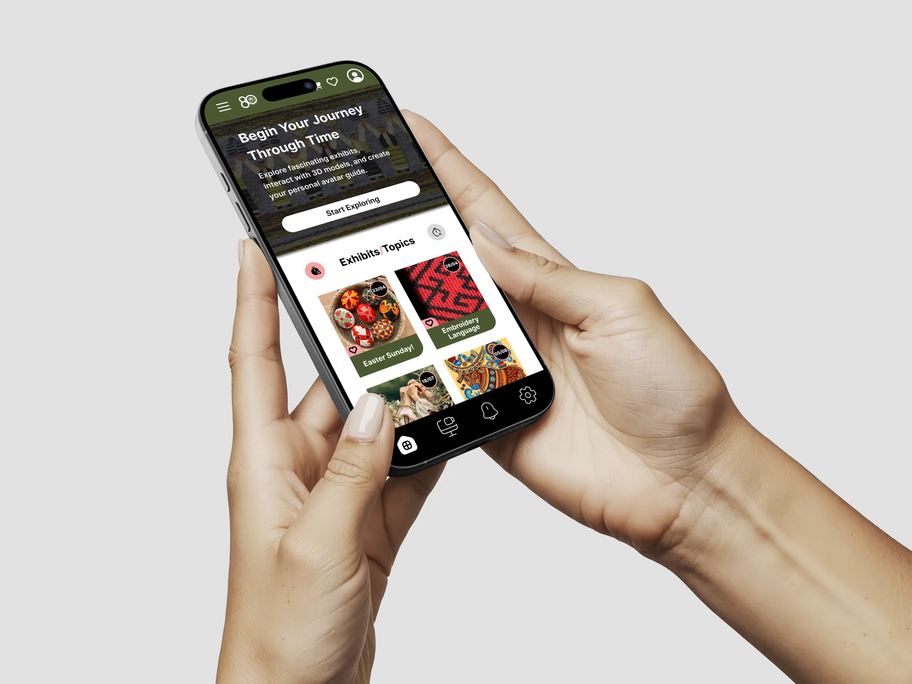
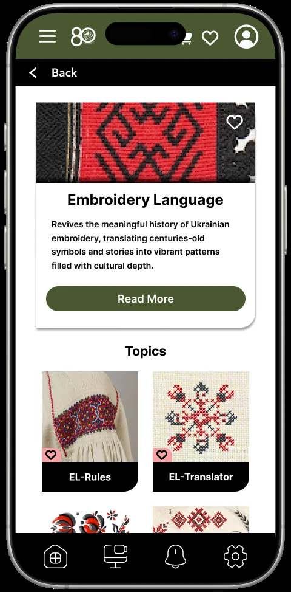
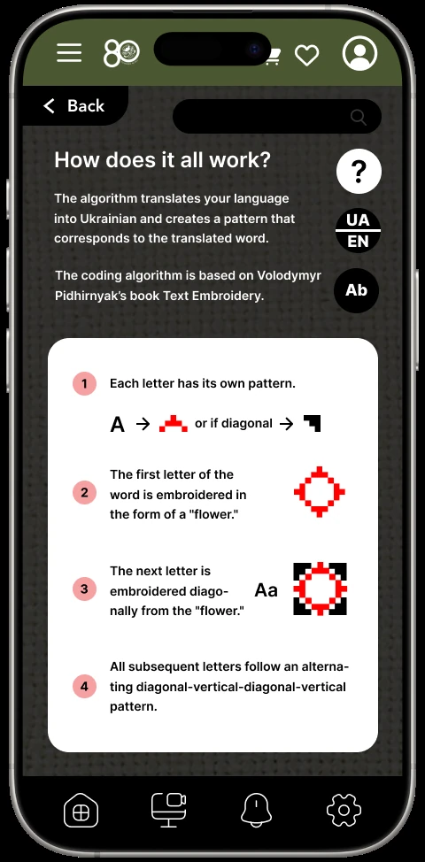
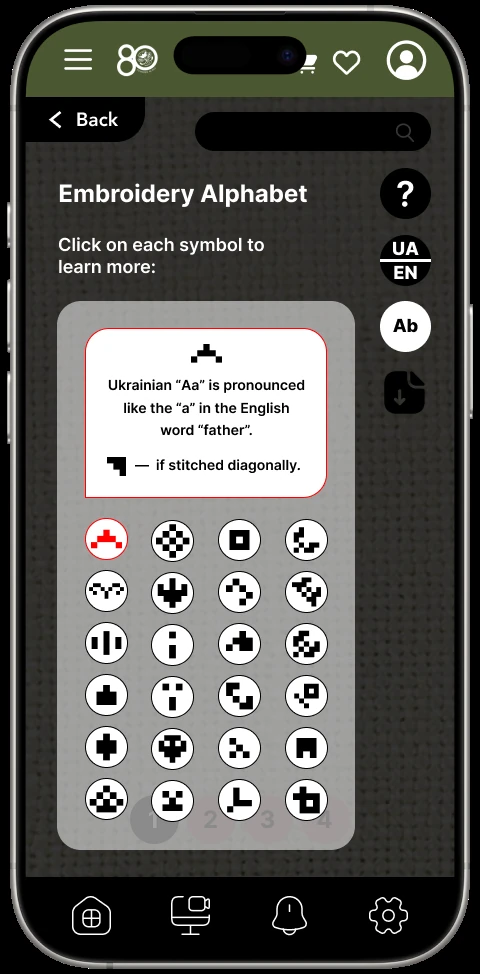
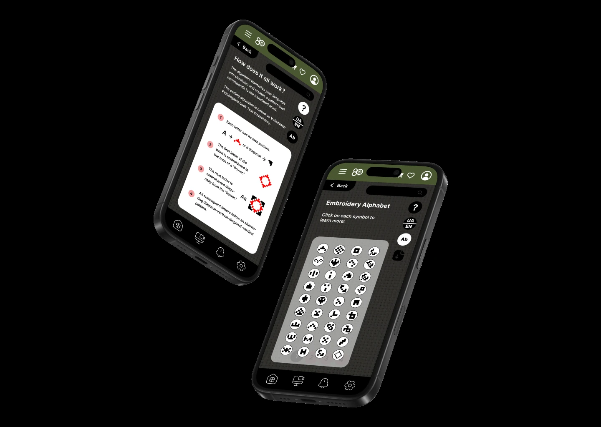

Seasonal themes and exhibitions create a clear point of entry.
Selected workLet a pattern
Product & experience design · Speculative concept
Let a pattern
tell its story.
A museum companion that turns Ukrainian embroidery from something visitors observe into a visual language they can explore.
Open Figma prototype
- My role
- Concept, content structure, interaction & UI
- Context
- Speculative museum companion
- Focus
- Embroidery Language interactive feature
- Status
- Figma concept · Not a commissioned museum product
01 / The idea
Move from viewing culture to engaging with it.
Museum visitors often meet complex cultural material through short labels. This concept creates another entry point: discover a topic, understand its context, and actively explore the logic within an embroidery pattern.
A brief explanation frames the feature before interaction begins.
Symbols and meanings remain available inside the activity.
02 / The experience
A guided path into the pattern.
The sequence introduces the cultural subject before presenting tools. Each screen answers one question: what is this, how does it work, and what does the selected symbol mean?



03 / The interaction
Keep knowledge beside the act of making.
The alphabet and meaning panel stay close to the creative space. Visitors do not need to leave the activity to understand a symbol; learning and participation happen in the same flow.

04 / The visual system
Quiet structure lets the artefacts lead.
Deep green, black, warm white, and a small red accent create a contemporary interface without competing with the colour and detail of the museum material.
Museum greenGallery blackArchive whiteThread red
05 / The result
A cultural interface built around curiosity.
The finished prototype establishes a coherent path from discovery to participation and demonstrates how explanatory content can remain present inside an interactive museum experience. It is presented honestly as a speculative design concept.